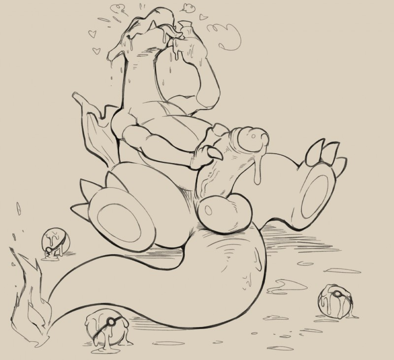
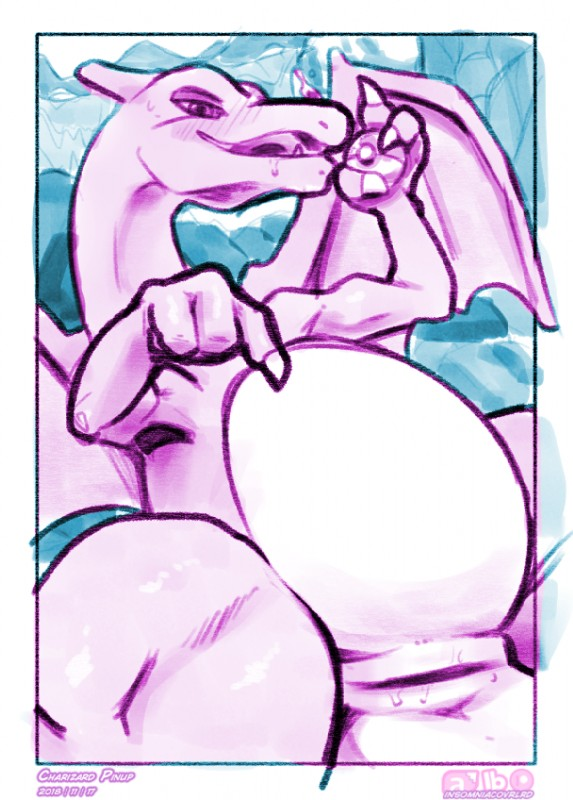

Charizard - #006
Charizard, again keeps the trait of using it's tail. It also regains its methods for getting it's mate that it used as a Charamander, while keeping the show-off method as well from Charmeleon. When they approach their mate, Charizard will flirt with them for a while and show off a bit with it's strong dragon body at the same time, often flexing its arms. When the chosen has accepted, Charizard will grab it's mate and fly off to it's den with them. After they have reached the den, Charizard will often lay down with it's mate and cuddle with it for a bit. During this Charizard is very passionate and will lovingly kiss it's chosen for a bit and eventually escalate it into mating. Charizard will lay down its mate on some bedding, while remaining on the private end. It'll softly grind and prod at its mate's hole to help ease it's large shaft, as to avoid hurting them. Charizard slowly and passionately pounds into it's mate, staring them deep in the eyes and will move into naughtily kiss them and will do so until the end of mating. As it finishes, Charizard will force it's shaft as deep as it can into its mate, releasing a torrent of seed. As the release finishes, Charizard picks up it's mate while still remaining inside them to lay down and cuddle some more. As both slowly drift to sleep, a great bond of love is formed to last a lifetime.
Desc written by "V-sama#3552"
| dex number: | 006 |
| e621 popularity: | 3956 | dom/sub: | mostly dom |
| size: | 4 |
|  |  | ||
|---|---|---|---|
| daftpatriot | nurinaki | argon vile | insomniacovrlrd |
Charizard e621